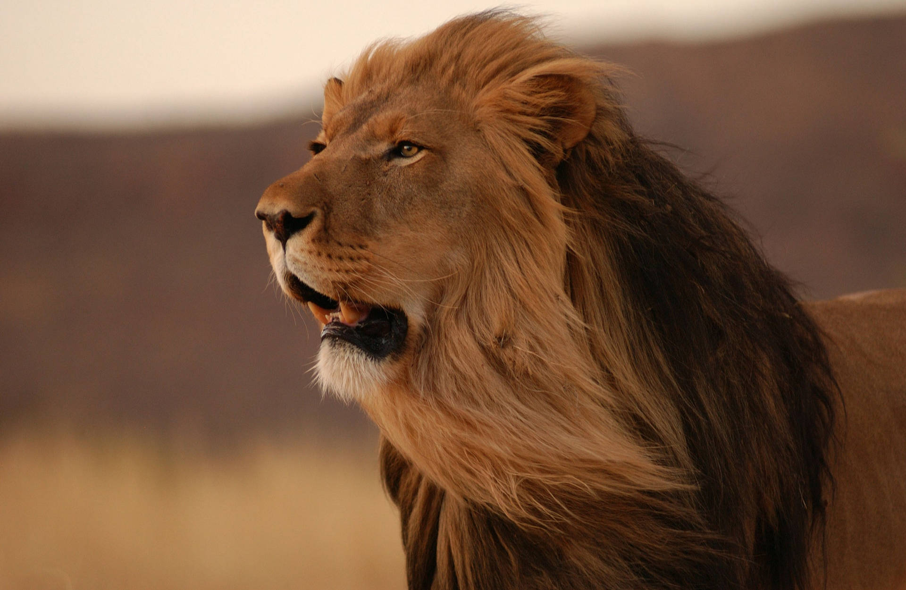
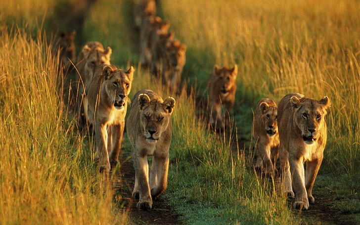
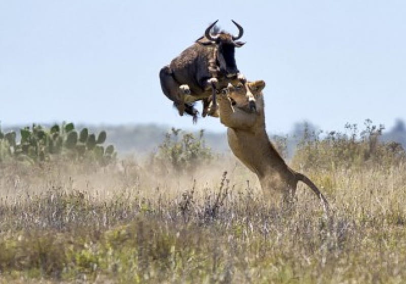
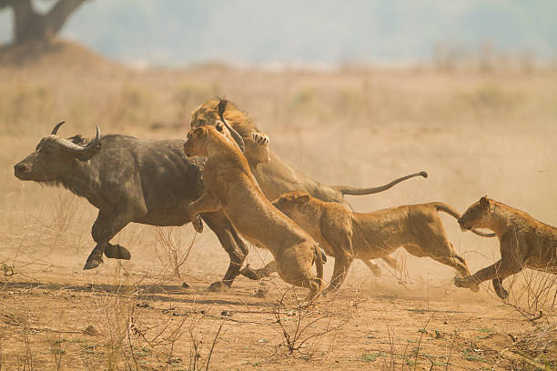
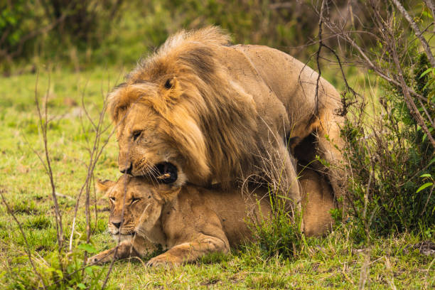
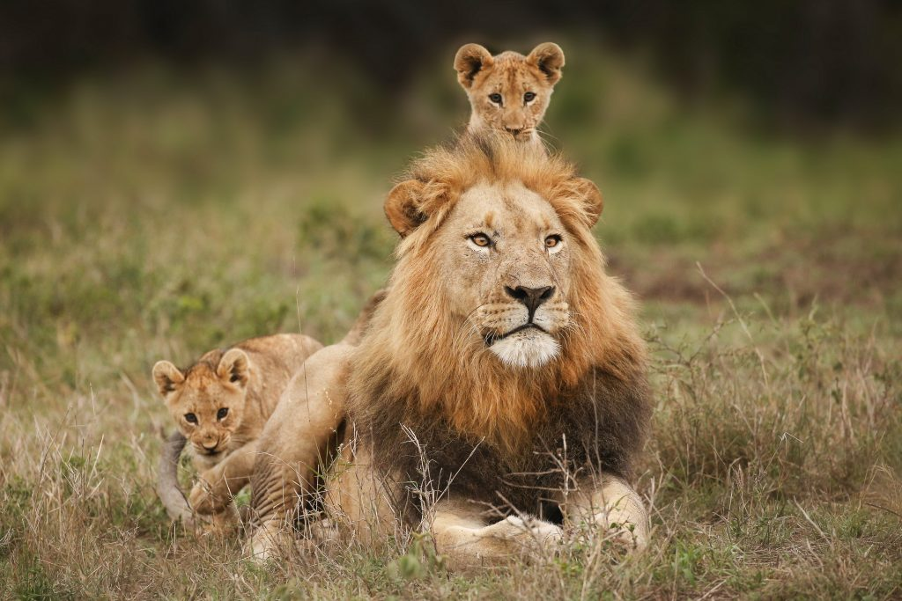

The Circle of Life:
Lions in their Natural Habitat
In the heart of the savannah, a lone lion, silent sentinel, surveys his kingdom with calculated watchfulness.
My Animal Exibition
Introduction
Welcome to the heart of the African wilderness, an expansive canvas where the indomitable lions reign supreme. In this documentary, we plunge into the dynamic lives of these majestic predators, where the sprawling savannah becomes a stage for the dance of survival. Here, familial bonds intertwine with the delicate balance of power within the pride, creating a complex social hierarchy.
Journey through the relentless trials of life in the wild, where every hunt is a strategic masterpiece, and each roar resonates with the untamed spirit of the plains. As dusk descends, we uncover the mysteries of the night, where the moonlight reveals the lions' nocturnal prowess. This is a front-row seat to the drama of nature, a tale of dominance, survival, and the timeless allure of the wild. Welcome to the captivating world of lions, where every paw print tells a story etched in the sands of the untamed.
General Characteristics

The lion is a well-muscled cat with a long body, large head, and short legs. Size and appearance vary considerably between the sexes. The male’s outstanding characteristic is his mane, which varies between different individuals and populations. It may be entirely lacking; it may fringe the face; or it may be full and shaggy, covering the back of the head, neck, and shoulders and continuing onto the throat and chest to join a fringe along the belly. In some lions the mane and fringe are very dark, almost black, giving the cat a majestic appearance. Manes make males look larger and may serve to intimidate rivals or impress prospective mates. A full-grown male is about 1.8–2.1 metres (6–7 feet) long, excluding the 1-metre tail; he stands about 1.2 metres high at the shoulder and weighs 170–230 kg (370–500 pounds). The female, or lioness, is smaller, with a body length of 1.5 metres, a shoulder height of 0.9–1.1 metres, and a weight of 120–180 kg. The lion’s coat is short and varies in colour from buff yellow, orange-brown, or silvery gray to dark brown, with a tuft on the tail tip that is usually darker than the rest of the coat.
Prides

Lions are unique among cats in that they live in a group, or pride. The members of a pride typically spend the day in several scattered groups that may unite to hunt or share a meal. A pride consists of several generations of lionesses, some of which are related, a smaller number of breeding males, and their cubs. The group may consist of as few as 4 or as many as 37 members, but about 15 is the average size. Each pride has a well-defined territory consisting of a core area that is strictly defended against intruding lions and a fringe area where some overlap is tolerated. Where prey is abundant, a territory area may be as small as 20 square km (8 square miles), but if game is sparse, it may cover up to 400 square km. Some prides have been known to use the same territory for decades, passing the area on between females. Lions proclaim their territory by roaring and by scent marking. Their distinctive roar is generally delivered in the evening before a night’s hunting and again before getting up at dawn. Males also proclaim their presence by urinating on bushes, trees, or simply on the ground, leaving a pungent scent behind. Defecation and rubbing against bushes leave different scent markings.
There are a number of competing evolutionary explanations for why lions form groups. Large body size and high density of their main prey probably make group life more efficient for females in terms of energy expenditure. Groups of females, for example, hunt more effectively and are better able to defend cubs against infanticidal males and their hunting territory against other females. The relative importance of these factors is debated, and it is not clear which was responsible for the establishment of group life and which are secondary benefits.
Hunting Habits

Lions prey on a large variety of animals ranging in size from rodents and baboons to Cape (or African) buffalo and hippopotamuses, but they predominantly hunt medium- to large-sized hoofed animals such as wildebeests, zebras, and antelopes. Prey preferences vary geographically as well as between neighbouring prides. Lions are known to take elephants and giraffes, but only if the individual is young or especially sick. They readily eat any meat they can find, including carrion and fresh kills that they scavenge or forcefully steal from hyenas, cheetahs, or wild dogs. Lionesses living in open savanna do most of the hunting, whereas males typically appropriate their meals from the female’s kills. However, male lions are also adept hunters, and in some areas they hunt frequently. Pride males in scrub or wooded habitat spend less time with the females and hunt most of their own meals. Nomadic males must always secure their own food.

Though a group of hunting lions is potentially nature’s most formidable predatory force on land, a high proportion of their hunts fail. The cats pay no attention to the wind’s direction (which can carry their scent to their prey), and they tire after running short distances. Typically, they stalk prey from nearby cover and then burst forth to run it down in a short, rapid rush. After leaping on the prey, the lion lunges at its neck and bites until the animal has been strangled. Other members of the pride quickly crowd around to feed on the kill, usually fighting for access. Hunts are sometimes conducted in groups, with members of a pride encircling a herd or approaching it from opposite directions, then closing in for a kill in the resulting panic. The cats typically gorge themselves and then rest for several days in its vicinity. An adult male can consume more than 34 kg (75 pounds) of meat at a single meal and rest for a week before resuming the hunt. If prey is abundant, both sexes typically spend 21 to 22 hours a day resting, sleeping, or sitting and hunt for only 2 or 3 hours a day.
Reproduction and Life Cycle
Both sexes are polygamous and breed throughout the year, but females are usually restricted to the one or two adult males of their pride. In captivity lions often breed every year, but in the wild they usually breed no more than once in two years. Females are receptive to mating for three or four days within a widely variable reproductive cycle. During this time a pair generally mates every 20–30 minutes, with up to 50 copulations per 24 hours. Such extended copulation not only stimulates ovulation in the female but also secures paternity for the male by excluding other males. The gestation period is about 108 days, and the litter size varies from one to six cubs, two to four being usual.

Newborn cubs are helpless and blind and have a thick coat with dark spots that usually disappear with maturity. Cubs are able to follow their mothers at about three months of age and are weaned by six or seven months. They begin participating in kills by 11 months but probably cannot survive on their own until they are two years old. Although lionesses will nurse cubs other than their own, they are surprisingly inattentive mothers and often leave their cubs alone for up to 24 hours. There is a corresponding high mortality rate (e.g., 86 percent in the Serengeti), but survival rates improve after the age of two. In the wild, sexual maturity is reached at three or four years of age. Some female cubs remain within the pride when they attain sexual maturity, but others are forced out and join other prides or wander as nomads. Male cubs are expelled from the pride at about three years of age and become nomads until they are old enough to try to take over another pride (after age five). Many adult males remain nomads for life.

Mating opportunities for nomad males are rare, and competition between male lions to defend a pride’s territory and mate with the pride females is fierce. Cooperating partnerships of two to four males are more successful at maintaining tenure with a pride than individuals, and larger coalitions father more surviving offspring per male. Small coalitions typically comprise related males, whereas larger groups often include unrelated individuals. If a new cohort of males is able to take over a pride, they will seek to kill young cubs sired by their predecessors. This has the effect of shortening the time before the cubs’ mothers are ready to mate again. Females attempt to prevent this infanticide by hiding or directly defending their cubs; lionesses are generally more successful at protecting older cubs, as they would be leaving the pride sooner. In the wild lions seldom live more than 8 to 10 years, chiefly because of attacks by humans or other lions or the effects of kicks and gorings from intended prey animals. In captivity they may live 25 years or more.